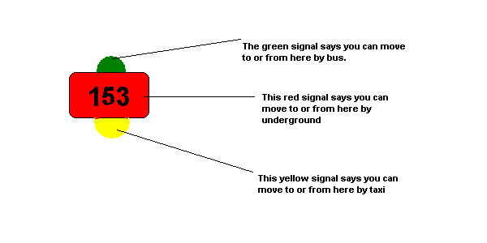

Game of Scotland Yard
prev
next
The play
HOW to move - a look at the game board: All players move from
one numbered location to another either by yellow taxi
routes, green bus routes or red underground routes. Each trip
must be paid for which the appropriate tickets. Notice that
all the transportation routes are color-coded properly.
The numbered locations are stations or stops for one or more
of the routes. Each location is color-coded to tell you what
transportation service you can use to move to such a
spot or to move from such a spot. Take a look at the
stop #153, near Buckingham palace on the game board for an
example of a stop with three transportation services

NOTE: All numbered locations are yellow signals, so you can
always move to and from such spots by taxi(if you have the
matching yellow ticket); two-stop locations(yellow and green
signals) allow you to move to and from them by taxi or
bus; three-stop locations(such as #153 above), are the rarest
and allow you to move to and from them by a taxi,bus or
underground.
prev
next